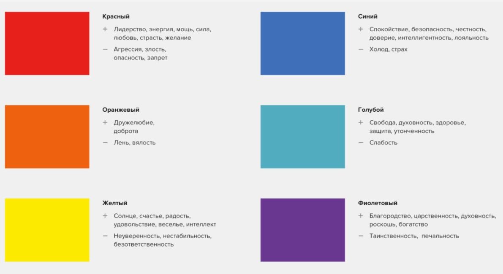

Мой Справочник | WEB-DESIGN | Цвет
Рекомендации:
- Для ФОНОВ лучше чередовать блоки с белым, светло-серым и темными цветами
- Для АКЦЕНТОВ лучше яркие или холодные цвета (кнопки, ссылки, логотипы, важные заголовки, фразы, цитаты, акции, предложения)
- СИНИЙ и ЗЕЛЁНЫЙ - используется практически в 80% сайтов
- По сути в дизайне должно быть 3-5 цветов (два контрастных цвета для фона и текста, акцентарный для выделения активных элементов кнопок, ссылок, заголовков и т.д. и вспомогательные для контраста с акцентным)
- Если хотите сделать цветовой акцент на каком-то элементе сайта (чаще всего кнопке), то выберите один основной яркий
цвет. Остальные цвета не должны ему мешать, а, наоборот, должны оттенять его.
- Для фона лучше всего использовать светлый цвет (белый, светло-серый и светло-бежевый), это не позволит глазам
пользователя быстро устать.
- Цвет не должен “резать глаз”, он должен быть приятным глазу и погружать в атмосферу.
- Для того, чтобы текст хорошо читался, делайте его контрастным по отношению с фону. Если вы используете светлый фон, то
текст набирайте темным (черным или темно-серым).
Онлайн-сервисы для подбора цвета и цветовой схемы:
Выбор цвета и цветовой схемы:
-
Основной цвет соответствующей эмоции
Придерживайтесь одного цвета. Это означает применение черного, белого и еще
одного темного цвета. Используйте новый цвет для выделения важного конструк-
тивного элемента, например подзаголовков в статье. Web-сайт журнала "Time"
применяет фирменный красный цвет для некоторых ссылок и фрагментов текста.
-
Применяйте едва окрашенные фоны светлых оттенков. Порой слабый акварель-
ный фон — все, что нужно для оживления сайта. Например, легкий бронзовый или
золотистый цвета могут придать элегантность и изысканность (см. сайт библиотеки
Гарвардского университета по адресу http://lib.harvard.edu). Светло-розовые или
желтые тона могут подготовить посетителей к покупке ночных рубашек или другой
женской одежды на сайте Victoria's Secret (www.victoriassecret.com).
-
Используйте текст в прямоугольной рамке. Web-дизайнеры часто применяют за-
крашенные прямоугольники для выделения важных областей Web-страницы (по-
смотрите в Википедии вот эту страницу http://en.wikipedia.org). Чуть позже в этой
главе вы узнаете, как создавать прямоугольные рамки.
-
С осторожностью пользуйтесь белым текстом. Белый текст на черном или темно-
синем фоне может быть поразительным — его очень трудно читать. Практическое
правило гласит: избегайте его, если не стремитесь создать футуристический, не-
традиционный и сумрачный облик вашего Web-сайта. (Даже если вы попадаете в
одну из этих категорий, можно добиться большего эффекта с помощью белого фо-
на и нескольких хорошо подобранных графических изображений с эффектными
волнующими цветами.)

Тёплые цвета
Красный
- Яркий (Вызывающий)
- Энергичный
- Лидерский (Смелый)
- Сильный, воинственный
- Открытый
- Полный решимости
- Усиливает вкус и аппетит
- Coca-cola, McDonalds, Магнит, МТС, М-Видео, Альфа-Банк
Лучший или универсальный акцентатор
Не переборщите с красным
Белый на красном - праздник
Марс
Оранжевый
- Дружественный
- Еда
- Здоровье
- Жизнь
- Осенняя погода
Если нужно много акцента, то лучше использовать оранжевый вместо красного
Солнце
Жёлтый
- Тёплый
- Позитивный
- Солнечный
- Жизнерадостный
- Символизирует тепло, счастье
- Радость
- Веселье
- Спорт
- Детсво
Чёрный на жёлтом - акцентирует внимание,
символизирует точность, чёткость
Желтый на красном усиливается, становиться энергичнее
Желтый на белом теряется
Красный + зелёный
Юпитер
Холодные цвета
Зелёный
- На втором месте после синего по популярности
- Природный
- Экологичный
- Натуральный
- Летний
- Спокойствие
- Безопасность
- Открытость
- Разрешенность
- ПРОЦВЕТАНИЕ
Тёмно-зелёный - консерватизм, взрослое, серъезное
Ярко-зелёный - молодость, йога, спорт, природа
Оливковый - более универсальный (хорошо сочетается с черным цветом)
TIFFANY (тренд 2017-2018, зелёно-синий)
Финансы, деньги
Меркурий
Синий
- Самый популярный цвет в веб-дизайне!
- Спокойствие (Вода, Ночь, Природа)
- Безопастность
- IT, профессионализм
- Надёжность
- Уверенность
- Лёгкость
- Чистота
- Порядок
- ГазПром, Спорт-Мастер, Минеральная Вода,
Хороший контраст с белым цветом
Корпоративные сайты, юридические фирмы, IT
Тёмно-синий - профессионалим, солидность, престижность
Ярко-синий (синий + зелёный) - молодость, йога, спорт, природа
Венера
Фиолетовый
- Между красным и синим
- Модный, дерзкий, выплеск энергии
- Творческий
- В тренде 2018-го
Кету
Нейтральные цвета
Белый
- Чистый
- Простой
- Пространство
- Добродетель
Часто как цвет фона
Трендовый для минимализма
Блоги, книжные сайты
Отлично выделяет внутренний контент контрастных цветов
Луна
Чёрный
- Драматичный
- Элегантный
- Лоск, Fashion
- Тяжелый
Чаще как цвет текста
Сайты для фотографов, видеографов
Нужно с ним поосторожнее в качестве фона
Комбинирование с оттенками серого
Сатурн
Серый
- Стабильный
- Консервативный
- Грязный
Лучше светло-серый
Светло-серый в качестве хорошего фона (близкий в белому)
Тёмно-серый может смотреться грязно в качестве фона (с ним нужно быть поаккуратнее)
Оттенки серого можно не учитывать в общем количестве цветов в дизайне
Можно использовать черно-белый дизайн без дополнительных цетов вообще (тренд 2021 года, colorless Web-design), цвета будут в изображениях, либо их не будет вовсе.
Прочие цвета
- Бронзовый*
- Светло-коричневый
- Песочный
Хорошо сочетаются с черным текстом и белым фоном (для акцента в простом тексте)
Новостные ресурсы. Когда нужен акцент, который не вызывает эмоций, просто акцент.